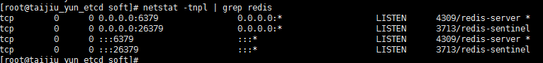

搭建redis-sentinel集群
- 环境要求：redis-sentinel集群最少需要三个redis实例，环境如下：
172.16.10.131 6379 redis01 26379 sentinel01
172.16.10.133 6379 redis02 26379 sentinel02
172.16.10.134 6379 redis03 26379 sentinel03
- 安装
Redis安装路径：/home/cec/redis
安装方法：# tar zxf redis-3.0.4.tar.gz
# mv redis-3.0.4 redis
# vim redis.conf
dir /home/cec/redis
# make
# 开放防火墙6379端口 ##测试环境直接关闭防火墙
- 修改配置文件
3.1 修改master配置文件redis.conf
logfile “/home/cec/redis/logs/redis.log” ##开启日志，新建logs目录
3.2 修改slave配置文件redis.conf
logfile “/home/cec/redis/logs/redis.log”
slaveof 172.16.10.131 6379
3.3 修改三个sentinel配置文件sentinel.conf
port 26379
dir /home/cec/redis/tmp ##新建tmp目录
#####修改master name ip#####
sentinel monitor mymaster 172.16.10.131 6379 2
logfile “/home/cec/redis/logs/sentinel.conf”
- 启动服务
# /home/cec/redis/src/redis-server /home/cec/redis/redis.conf &
# /home/cec/redis/src/redis-sentinel /home/cec/redis/sentinel.conf &

5、开发需要修改程序代码，添加redis集群模块。
6、相关命令
# redis-cli -p 6379 info Replication
###查看主的信息###

###查看从的信息###

# redis-cli -p 26379 info Sentinel ##查看哨兵监测到的信息

- 故障及恢复
三台redis集群能够支撑两台redis出现故障。
6.1 测试slave故障：slave故障后，重新启动redis即可，故障期间的数据会自动同步。如下：关闭10.133的redis服务，在master上可以看到slave只剩下一台。
此时在master上写入一个新数据，待133的redis重启后再在133上get，数据是可以同步的。测试两台slave故障情况类似。


6.2 测试master故障，master故障后，集群通过sentinel会在两台slave中选举新的master，如下：关闭master 10.134的redis，10.131就转变成了新的master，此时集群是能正常提供服务的。

然后重新启动10.134的redis，此时134的角色就成了slave。

测试期间，有测试工程师协助测试应用性能，上述故障情况，应用能正常工作。